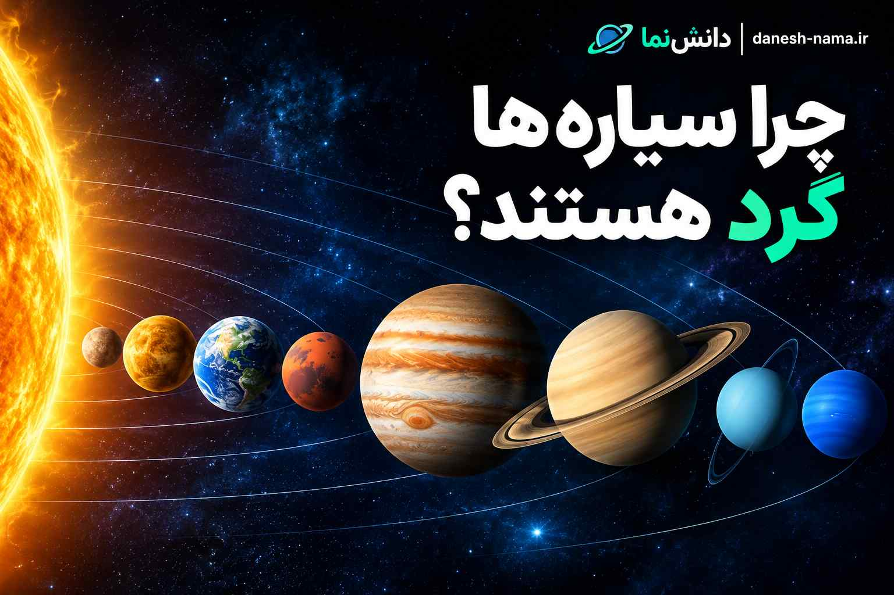

چرا سیارهها گرد هستند؟ دلیل کروی بودن سیارات
اگر به تصاویر زمین، مریخ، مشتری یا زحل نگاه کنید، تقریباً همه آنها شکلی گرد یا کروی دارند. اما چرا؟ چرا سیارهها معمولاً گرد هستند و مثلاً به شکل مکعب یا یک سنگ نامنظم نیستند؟ پاسخ اصلی در یکی از بنیادیترین نیروهای طبیعت یعنی گرانش نهفته است. گرانش باعث میشود ماده به سمت مرکز جرم کشیده شود و وقتی یک جرم فضایی به اندازه کافی بزرگ باشد، این نیرو میتواند شکل آن را به سمت یک حالت تقریباً کروی سوق دهد.
گرانش چگونه یک سیاره را گرد میکند؟
گرانش نیرویی است که باعث جذب اجسام دارای جرم به سوی یکدیگر میشود. در یک جرم کوچک مانند یک سنگ، گرانش آنقدر ضعیف است که نمیتواند ساختار سنگ را به شکل کروی تغییر دهد. اما وقتی مقدار ماده یک جرم بسیار زیاد شود، گرانش آن جرم نیز بسیار قویتر میشود. در یک سیاره بزرگ، مواد از همه جهات تحت تأثیر گرانش قرار میگیرند و تمایل دارند به سمت مرکز جرم حرکت کنند. در نتیجه برآمدگیهای بسیار بزرگ به مرور کاهش پیدا میکنند و جرم به شکلی نزدیک به کروی تبدیل میشود.
آیا زمین کاملاً یک کره کامل است؟
نه. زمین تقریباً کروی است، اما یک کره هندسی کاملاً بینقص نیست. زمین به دلیل چرخش خود به دور محورش، در ناحیه استوا کمی برآمدهتر و در نزدیکی قطبها کمی پختر است. به چنین شکلی کروی پخشده یا Oblate Spheroid گفته میشود.
چرا چرخش زمین روی شکل آن تأثیر میگذارد؟
زمین تقریباً هر ۲۴ ساعت یک بار به دور محور خود میچرخد. این چرخش باعث ایجاد اثر گریز از مرکز میشود. این اثر در نزدیکی استوا بیشتر است و باعث میشود ماده در آن ناحیه اندکی به سمت بیرون تمایل داشته باشد. به همین دلیل قطر زمین در استوا کمی بیشتر از فاصله بین دو قطب است.
چرا سیارکها همیشه گرد نیستند؟
اینجا یک تفاوت بسیار جالب وجود دارد. اگر گرانش باعث گرد شدن اجرام شود، پس چرا بسیاری از سیارکها شکلهای عجیب و نامنظم دارند؟ پاسخ این است که سیارکهای کوچک جرم کافی برای غلبه کامل گرانش بر استحکام سنگهای خود ندارند. در نتیجه ساختار آنها میتواند شکل نامنظم خود را حفظ کند. اما اگر جرم یک جسم به اندازه کافی زیاد شود، گرانش میتواند مواد آن را به سمت شکل نزدیک به تعادل کروی هدایت کند.
مقایسه سیاره و سیارک
| ویژگی | سیاره بزرگ | سیارک کوچک |
|---|---|---|
| اثر گرانش | بسیار مهم در شکل جرم | معمولاً برای گرد کردن کامل کافی نیست |
| شکل | معمولاً تقریباً کروی | اغلب نامنظم |
| ساختار | جرم بسیار زیاد | جرم کمتر |
| چرخش | میتواند روی شکل اثر بگذارد | ممکن است اثر متفاوتی داشته باشد |
آیا همه سیارهها کاملاً گرد هستند؟
خیر. تقریباً هیچ سیارهای یک کره هندسی کاملاً کامل نیست. سرعت چرخش، جرم سیاره، ساختار داخلی و ویژگیهای فیزیکی آن میتوانند روی شکل نهایی اثر بگذارند. برای مثال سیارههای گازی بسیار بزرگ و سریعچرخان، مانند مشتری، در ناحیه استوا برآمدگی بیشتری دارند.
چرا مشتری از زمین پختر است؟
مشتری یکی از سریعترین چرخشها را در میان سیارات منظومه شمسی دارد. این سیاره تقریباً هر ۱۰ ساعت یک بار به دور محور خود میچرخد. جرم بسیار زیاد و چرخش سریع مشتری باعث شده شکل آن نسبت به یک کره کامل، در قطبها پختر و در استوا برآمدهتر باشد.
آیا گرانش تنها دلیل گرد شدن سیارات است؟
گرانش عامل اصلی است، اما شرایط فیزیکی ماده نیز اهمیت دارد. در اجرام بسیار بزرگ، فشار و دمای داخلی میتواند بسیار زیاد باشد و مواد در بازههای زمانی طولانی تحت تأثیر گرانش تغییر شکل دهند. در نتیجه شکل نهایی جرم به تعادل میان گرانش، چرخش و ویژگیهای ماده بستگی دارد.
سیارهها چه زمانی در شکلگیری گرد میشوند؟
سیارات در مراحل اولیه شکلگیری خود از تجمع مواد مختلف ایجاد میشوند. در این مراحل، ذرات و اجرام کوچکتر تحت تأثیر گرانش به یکدیگر جذب میشوند. با افزایش جرم، اثر گرانش نیز بیشتر میشود. وقتی یک جرم به اندازه کافی بزرگ شود، گرانش میتواند شکل کلی آن را به سمت یک حالت تقریباً کروی هدایت کند.
چرا خورشید هم تقریباً گرد است؟
فقط سیارهها نیستند که تقریباً کروی هستند. خورشید نیز به دلیل جرم بسیار زیاد و گرانش قدرتمند خود، شکلی تقریباً کروی دارد. البته خورشید نیز به دلیل چرخش خود کاملاً یک کره هندسی بینقص نیست.
آیا ماه هم گرد است؟
بله. ماه نیز جرم بسیار زیادی دارد و گرانش آن برای شکل دادن به ساختار کلی آن کافی بوده است. به همین دلیل ماه تقریباً کروی است. اما مانند زمین، کاملاً یک کره هندسی بینقص نیست.
اگر گرانش وجود نداشت چه اتفاقی میافتاد؟
بدون گرانش، مواد یک جرم بزرگ نمیتوانستند به شکل مشابهی به سمت مرکز جرم کشیده شوند. ساختار اجرام میتوانست بسیار متفاوت باشد. در منظومه شمسی، گرانش نقش اساسی در شکلگیری ستارهها، سیارات، قمرها و بسیاری از اجرام دیگر دارد.
تفاوت شکل زمین، مشتری و یک سیارک
| جرم | شکل کلی | دلیل اصلی |
|---|---|---|
| زمین | تقریباً کروی و کمی پخ | گرانش + چرخش |
| مشتری | کروی و پختر در قطبها | گرانش + چرخش بسیار سریع |
| ماه | تقریباً کروی | گرانش |
| سیارک کوچک | اغلب نامنظم | گرانش ضعیفتر و ساختار جامد |
آیا همه اجرام فضایی گرد هستند؟
خیر. کروی بودن بیشتر در اجرام بزرگی دیده میشود که گرانش آنها برای تغییر شکل کلی جرم کافی است. اجرام کوچکتر مانند بسیاری از سیارکها، هستههای دنبالهدارها و قطعات سنگی میتوانند شکلهای بسیار نامنظمی داشته باشند. بنابراین فقط با نگاه کردن به شکل یک جرم نمیتوان گفت که یک سیاره است؛ ویژگیهای دیگری نیز برای تعریف سیاره اهمیت دارند.
رابطه این موضوع با منظومه شمسی
برای شناخت بهتر شکل سیارات، باید منظومه شمسی را نیز بشناسیم. منظومه شمسی شامل خورشید، هشت سیاره، قمرها و تعداد بسیار زیادی جرم کوچکتر مانند سیارکها و دنبالهدارهاست. اگر میخواهید درباره ساختار کلی منظومه شمسی بیشتر بدانید، مقاله منظومه شمسی چیست؟ را بخوانید.
مطالب مرتبط در دانشنما
جمعبندی
دلیل اصلی گرد بودن سیارات، گرانش است. هرچه یک جرم فضایی بزرگتر شود، گرانش آن نیز بیشتر میتواند مواد تشکیلدهندهاش را به سمت مرکز جرم بکشد. در نتیجه اجرام بسیار بزرگ مانند زمین، مریخ و مشتری معمولاً شکلهایی نزدیک به کره دارند. با این حال هیچکدام الزاماً یک کره کاملاً بینقص نیستند. چرخش جرم میتواند باعث شود قسمت استوایی آن کمی برآمده و قطبهای آن کمی پخ شوند. در مقابل، بسیاری از اجرام کوچکتر مانند سیارکها گرانش کافی برای تغییر شکل کامل خود ندارند و به همین دلیل میتوانند شکلهای بسیار نامنظم داشته باشند.
نظرات کاربران